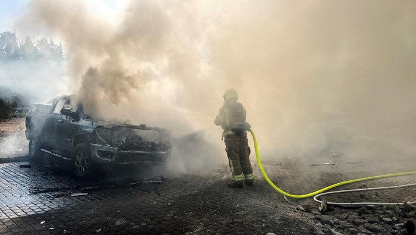

Jumat, 18 Okt 2024 11:44 WIB
Jakarta - Kelompok Hizbullah di Lebanon mengatakan pihaknya meluncurkan fase baru dalam perangnya melawan Israel. Fase baru ini ditandai dengan penggunaan rudal berpemandu presisi terhadap pasukan Israel untuk pertama kalinya. Israel telah menggempur Lebanon selatan dan timur, wilayah yang dikuasai Hizbullah, sejak perang habis-habisan meletus pada tanggal 23 September lalu. Di desa-desa perbatasan Lebanon, para pesaing terlibat dalam pertempuran jarak dekat setelah Israel melancarkan invasi darat bulan lalu.
Hizbullah "mengumumkan transisi ke fase baru dan eskalasi dalam konfrontasi dengan musuh Israel, yang akan tercermin dalam perkembangan dan peristiwa beberapa hari mendatang," kata kelompok bersenjata yang didukung Iran itu dalam sebuah pernyataan, dilansir kantor berita AFP, Jumat (18/10/2024). Pengumuman itu muncul setelah militer Israel pada hari Kamis (17/10) mengatakan pasukannya membunuh Yahya Sinwar, pemimpin Hamas, yang merupakan sekutu Hizbullah. Namun, pernyataan Hizbullah tersebut tidak menyinggung tentang kematian Sinwar. Dalam pernyataannya, Hizbullah mengatakan bahwa "ratusan petempur... sepenuhnya siap untuk melawan serangan darat Israel ke desa-desa Lebanon selatan," seraya menekankan bahwa serangan terhadap Israel telah meningkat dalam beberapa hari terakhir.